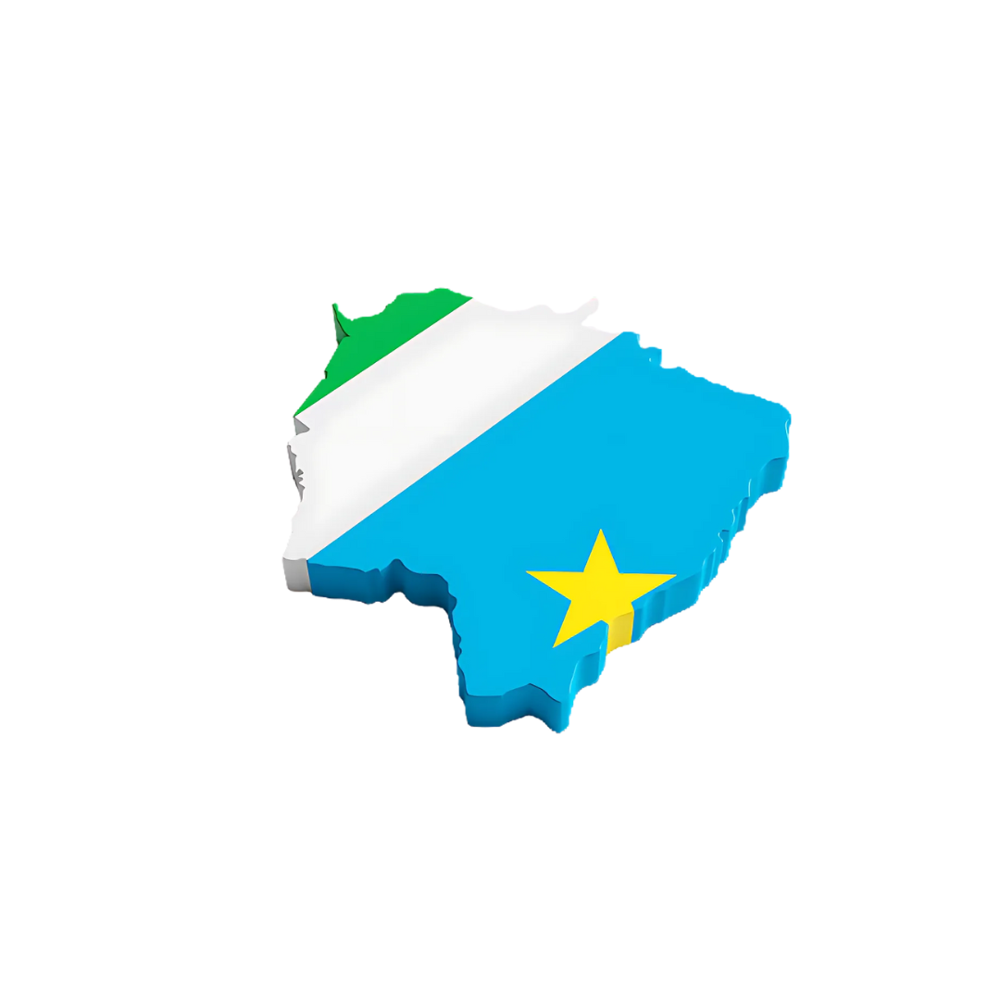

Capital: Campo Grande
Economia: Comércio, serviços, pecuária e soja.
Infraestrutura: Aeroporto Internacional de Campo Grande.
Cultura e Turismo: Festivais, gastronomia, acesso ao Pantanal.
Produção: Soja, milho (2ª safra), cana-de-açúcar.
Clientes: Indústrias, usinas e exportadores.
Economia: Soja, milho, algodão, pecuária.
Turismo: Ecoturismo e pesca.
Produção: Relevante em soja e algodão.
Clientes: Indústrias têxteis, frigoríficos, exportadores.
Economia: Grãos (soja, milho), pecuária, comércio internacional.
Cultura: Influência indígena (Guarani).
Produção: Soja, milho, cana-de-açúcar.
Clientes: Indústrias alimentícias, usinas e exportação.
Economia: Pecuária extensiva, pesca e turismo ecológico.
Turismo: Observação de fauna (onça, aves, jacarés).
Produção: Pecuária, pesca.
Clientes: Frigoríficos, operadores turísticos.
Capital: Campo Grande
Limites: MT, GO, MG, SP, Paraguai
Área: 357.125,6 km²
População: Cerca de 2,8 milhões
Clima: Tropical, estações seca e chuvosa
Educação: UFMS, escolas públicas e privadas
Transporte: BR-163, ferrovia, aeroporto internacional